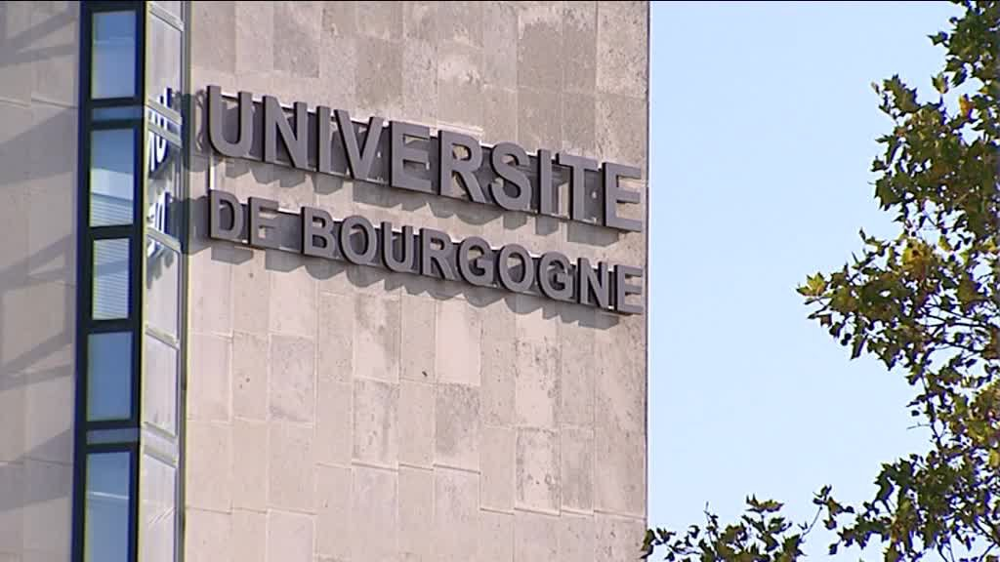
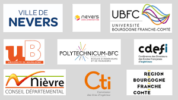

UNIVERSITE
L'université de Bourgogne (uB) est une université située dans la ville de Dijon. Elle possède également des antennes à Auxerre, Chalon-sur-Saône, Le Creusot, Mâcon et Nevers. Elle offre un large éventail de formation dans toutes les disciplines (hors odontologie : droit, économie, gestion, lettres, langues, médecine, pharmacie, sciences humaines, sciences exactes et expérimentales) et à tous les niveaux (licence, master, doctorat, diplômes de technologie, d'ingénieurs, professionnalisés, de santé, d'enseignement et de formation à la recherche). Elle a été fondée en 1722. Plus de 30 000 étudiants sont accueillis chaque année, plus de 2 000 salariés ou demandeurs d'emploi s'y forment dans le cadre de la formation continue. Propriétaire de vignoble et d'un centre d'expérimentation à Marsannay-la-Côte (agglomération dijonnaise), elle offre des filières complètes en sciences de la vigne et œnologie, regroupés dans l'Institut Jules-Guyot nommé d'après Jules Guyot. L'université de Bourgogne consacre près du tiers de son budget (hors salaires) à la recherche. Depuis le 1er avril 2015, l'université de Bourgogne est membre fondateur de la communauté d'universités et établissements Université Bourgogne - Franche-Comté (COMUE UBFC), qui a son siège à Besançon.
Unités de formation et de recherche
L'université compte huit UFR9 :
- Droit et Sciences Economique et Politique
- Langues et Communication
- Lettres et Philosophie
- Sciences de Santé
- Sciences du Sport (STAPS)
- Sciences et Techniques
- Sciences Humaines
- Sciences Vie, Terre et Environnement


Instituts
L'université compte six instituts d'enseignement9 :
- Institut d'administration des entreprises (IAE)
- Institut de la Vigne et du Vin Jules Guyot (IUVV)
- Institut Supérieur de l'Automobile et des Transports (ISAT)
- Institut Universitaire de Technologie de Dijon-Auxerre
- Institut Universitaire de Technologie de Chalon-sur-Saône
- Institut Universitaire de Technologie du Creusot
L'université compte également six écoles doctorales et 32 laboratoires et entités de recherche.
Enseignement
L'université propose près de 400 formations diplomantes :
- 26 licences générales
- 132 masters
- 32 disciplines doctorat
- 15 DUT
- 60 diplômes universitaires
- 90 diplômes et spécialisations santé
Elle accueille dans ses effectifs en 2019 1 854 étudiants en formation continue et plus de 750 en formation à distance.
Partenariats intenrationaux
L'université de Bourgogne a signé 386 partenariats avec des universités internationales, permettant la mobilité de ses étudiants et chercheurs partout dans le monde ainsi que l'accueil de 2 783 étudiants internationaux de 120 nationalités différentes10. Elle proposose également des cursus intégrés (double ou triple diplôme) en langue, sciences humaines, droit ou sciences politiques, soutenus par l'Université Franco-Allemande, avec l'Université Johannes Gutenberg de Mayence en Allemagne, mais aussi celles de Sherbrooke (Canada) et Opole (Pologne) en option trinationale suivant les cursus.
Université Européenne
En juin 2019, l'université est avec 14 autres universités françaises l'une des lauréates du premier appel à projet « Universités européenne »s de la Commission européenne. Réunies au sein de l'alliance FORTHEM, les universités de Dijon, Palerme (Italie), Jyväskylä (Finlande), Opole (Pologne), Valence (Espagne) , Mayence (Allemagne), et de Lettonie, font partie d'une des premières 17 universités européennes retenues par la Commission (sur 54 dossiers de candidatures déposés)11.
Classements internationaux
L'université de Bourgogne figure depuis 2017 au classement des meilleurs université mondiale réalisé par l'université Jiao Tong de Shanghai (Academic Ranking of World Universities), à la 601e-700e place en 2019. La même année, elle était classée 768e par le classement Ranking Web of World Universities qui est basé sur le volume et la qualité des publications électroniques des 6 000 écoles et universités classées.